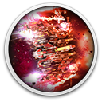

 Beat Hazard 2
Details
 |
|
| Spielzeit | Nicht gespielt |
| Letzte Aktivität | Nie |
| Hinzugefügt | 26.04.2022 9:24:17 |
| Modifiziert | 12.12.2022 1:19:43 |
| Fertigstellungsstatus | Not Played |
| Bibliothek | Gog |
| Quelle | GOG |
| Plattform | PC (Windows) |
| Veröffentlichungsdatum | 15.10.2019 |
| Community Bewertungen | 70 |
| Kritiker Punkte | |
| Benutzerwertung | |
| Genre | Action Arcade Music |
| Entwickler | Cold Beam Games |
| Verleger | Cold Beam Games |
| Eigenschaft | Achievements Cloud Saves Controller Support Co-op Leaderboards Single Player |
| Links | Forum Shopseite PCGamingWiki |
| Tag | Bullet Hell Casual Great Soundtrack Local Co-Op Rhythm Shoot 'Em Up Space Twin Stick Shooter VR |
Beschreibung
Gameplay Powered by YOUR Music!
Erleben Sie Ihre Musiksammlung wie nie zuvor mit diesem intensiven durch Musik gesteuerten Arcade-Shooter.
Jedes Lied fühlt sich anders an.. Beat Hazard 2 vermischt nahtlos Musik und Spielgeschehen. Zusammen werden sie mehr als die bloße Kombination der beiden Teile.
Beat Hazard 2 verbessert und steigert das fantastische Zen-Feeling des Kampfes zu Ihrer eigenen Musik. Starte dein Raumschiff und beobachte, wie die Musik deine Feuerkraft erhöht. Entfesseln Sie das Höllenfeuer auf den feindlichen Schiffen, wenn sie Ihre Waffenstärke maximieren.
Die Fortsetzung sprengt die Grenzen des musikbasierten Gameplays und beinhaltet prozedural generierte Bossschiffe. Jedes Lied erzeugt einen einzigartigen Erzfeind, der zerstört werden muss.
Premium-Musik-Streaming-Dienste werden über ein 'Open Mic'-System unterstützt, welches jede Musikquelle abspielen kann. Die Musik liegt dir zu Füßen, spiele mit Spotify, Amazon Music!
Features:
Erleben Sie Ihre Musiksammlung wie nie zuvor mit diesem intensiven durch Musik gesteuerten Arcade-Shooter.
Jedes Lied fühlt sich anders an.. Beat Hazard 2 vermischt nahtlos Musik und Spielgeschehen. Zusammen werden sie mehr als die bloße Kombination der beiden Teile.
Beat Hazard 2 verbessert und steigert das fantastische Zen-Feeling des Kampfes zu Ihrer eigenen Musik. Starte dein Raumschiff und beobachte, wie die Musik deine Feuerkraft erhöht. Entfesseln Sie das Höllenfeuer auf den feindlichen Schiffen, wenn sie Ihre Waffenstärke maximieren.
Die Fortsetzung sprengt die Grenzen des musikbasierten Gameplays und beinhaltet prozedural generierte Bossschiffe. Jedes Lied erzeugt einen einzigartigen Erzfeind, der zerstört werden muss.
Premium-Musik-Streaming-Dienste werden über ein 'Open Mic'-System unterstützt, welches jede Musikquelle abspielen kann. Die Musik liegt dir zu Füßen, spiele mit Spotify, Amazon Music!
Features:
- Open Mic' ermöglicht die Nutzung Ihrer gesamte Musik:
Spotfiy
Amazon Music
Apple Music
YouTube
- Volle Unterstützung Ihrer lokalen Musik
Mp3, wma, flac, ogg, aac, m4a, wav, aiff
- Internetradio von ShoutCAST
Spielen Sie mit Tausenden von Sendern aus der ganzen Welt
- Prozedural generierte Bosse
Welche Monster werden deine Tracks entfesseln?
- Ranglisten für jedes Lied
Trete mit deinen Lieblingsliedern gegen deine Freunde an
- Verbesserte, überwältigende Grafik und Beleuchtung
- Fantastischer Original Soundtrack
Komponiert von dem großartigen Johnny Frizz